INTRODUCTION
สวัสดีครับ ผมชื่อบีม เป็นนักพัฒนา Fullstack มือใหม่
ที่กำลังมุ่งมั่นเข้าสู่วงการ Web Development ด้วยใจรักและความตั้งใจ
ขอบคุณที่แวะมาเยี่ยมชม Portfolio ของผมครับ
About Me
ผมชื่อบีม เป็นนักพัฒนา Fullstack มือใหม่
จบการศึกษาจากคณะวิศวกรรมศาสตร์ สาขาวิศวกรรมอิเล็กทรอนิกส์และระบบคอมพิวเตอร์ มหาวิทยาลัยศิลปากร
ผมเริ่มต้นเรียนรู้การเขียนเว็บไซต์จากมหาวิทยาลัย โดยมีพื้นฐานด้าน HTML, CSS และ JavaScript
และได้ต่อยอดความรู้ผ่านการเรียนคอร์ส Fullstack Developer กับ FutureSkill พร้อมใบ Certificate
ซึ่งช่วยให้ผมเข้าใจการทำงานทั้งฝั่ง Frontend และ Backend มากขึ้น
นอกจากนี้ ผมยังมีประสบการณ์ฝึกงานในตำแหน่ง Web Developer เป็นเวลา 3 เดือน
ซึ่งทำให้ได้เรียนรู้การพัฒนาเว็บจริง และเข้าใจการทำงานร่วมกับทีม
ปัจจุบันผมกำลังมองหาโอกาสในการร่วมงานกับทีมที่พร้อมให้คำแนะนำ
เพื่อเรียนรู้จากประสบการณ์จริง และเติบโตเป็นนักพัฒนาที่มีคุณภาพในสายงานนี้
ดูใบ Certificate
จุดแข็ง
เรียนรู้ไว มีความตั้งใจในการพัฒนาอย่างต่อเนื่อง
ทำงานร่วมกับทีมได้ดี เปิดรับคำแนะนำ
มีทักษะในการแก้ปัญหาเฉพาะหน้าอย่างมีเหตุผล
รับผิดชอบต่องานและหน้าที่อย่างจริงจัง
พร้อมพัฒนาทักษะใหม่ ๆ เพื่อปรับตัวกับเทคโนโลยีที่เปลี่ยนแปลง
Skills
Html
Css
Javascripts
react.js
Node.js
Express.js
Gits
Experience
Web Developer Intern
บริษัท CPF - เมษายน ถึง มิถุนายน 2567
ผมฝึกงานในตำแหน่ง Web Developer เป็นระยะเวลา 3 เดือน
รับผิดชอบในการพัฒนาเว็บไซต์ภายในองค์กร โดยใช้ HTML, CSS, JavaScript และ PHP
พร้อมทั้งเชื่อมต่อระบบกับฐานข้อมูล MySQL เพื่อจัดเก็บและแสดงผลข้อมูลที่ใช่ในการทำงานจริง
ผลงานที่ผมได้รับมอบหมายและพัฒนาเอง ได้แก่:
พัฒนาเว็บสำหรับแยกประเภทของกระบวนการผลิต -
เพื่อให้เจ้าหน้าที่สามารถกำหนดสายการผลิตตามลักษณะสินค้าได้อย่างเป็นระบบ
พัฒนาเว็บสำหรับแยกชนิดของการผลิตอาหาร -ใช้แสดงข้อมูลอาหารแต่ละชนิดและจัดกลุ่มตามหมวดหมู่
เพื่อความสะดวกในการจัดการ
พัฒนาเว็บสำหรับตั้งค่าและจัดการข้อมูลสต็อกสินค้า -
ให้สามารถปรับข้อมูลคงคลังสินค้าและตรวจสอบสถานะสต็อกได้แบบเรียลไทม์
จากประสบการณ์นี้ ผมได้เรียนรู้การพัฒนาเว็บไซต์ในสภาพแวดล้อมจริง
ฝึกการทำงานร่วมกับทีม การเขียนโค้ดให้เป็นระบบ และการเชื่อมต่อกับระบบเดิมขององค์กรได้อย่างราบรื่น
Projects
Cartoon GAN Image (โปรเจกต์จบการศึกษา)
เว็บแอปพลิเคชันที่ใช้ AI (GAN) แปลงภาพถ่ายจริงให้เป็นภาพสไตล์การ์ตูนแบบอัตโนมัติ
ใช้เทคนิค Deep Learning และ TensorFlow.js ฝั่ง client เพื่อรันโมเดลบนเบราว์เซอร์โดยไม่ต้องใช้ server
ใช้ CartoonGAN สำหรับ style transfer
โมเดล convert จาก Python → TensorFlow.js
สร้าง frontend ด้วย HTML/CSS + JavaScript
Project นี้พัฒนาเพื่อเป็นส่วนหนึ่งของวิชาโครงงานจบ
ตัวอย่างหน้าจอ:
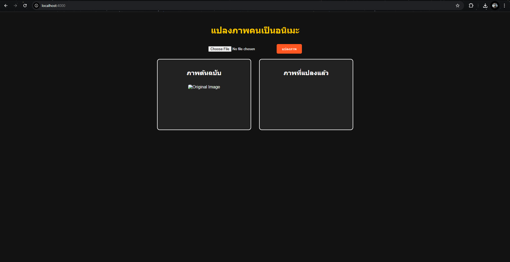
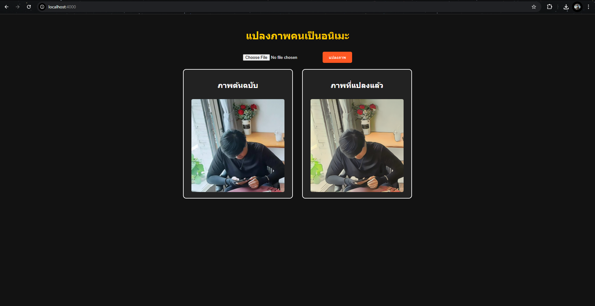
GitHub Link: Cartoon GAN Image Converter
ดูตัวอย่างออนไลน์: Cartoon GAN (GitHub
Pages)
ระบบแยกประเภทกระบวนการผลิต (โปรเจกต์จากฝึกงานที่ CPF)
พัฒนาเว็บสำหรับแยกประเภทของกระบวนการผลิตสินค้าในโรงงาน
เพื่อให้เจ้าหน้าที่สามารถจัดหมวดหมู่กระบวนการต่าง ๆ และกำหนดสายการผลิตได้อย่างเป็นระบบ
ฟีเจอร์หลัก:
ตารางแสดงรายการวัตถุดิบที่มีการจัดหมวดหมู่และสูตรเฉพาะ
รองรับการกรองข้อมูล และเรียงลำดับตามหมวด
เชื่อมต่อฐานข้อมูลภายในแบบ real-time
ดีไซน์ UI ให้สามารถดูข้อมูลจำนวนมากได้อย่างเป็นระบบ
ตัวอย่างหน้าจอ:
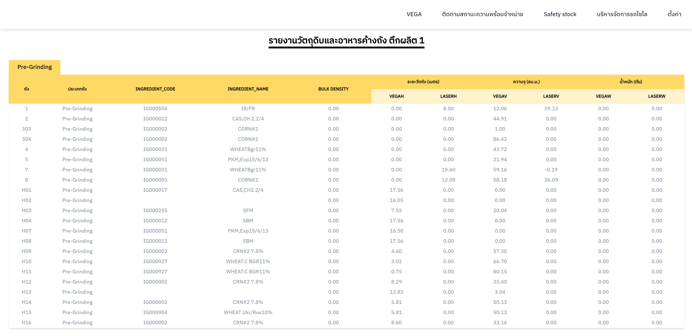
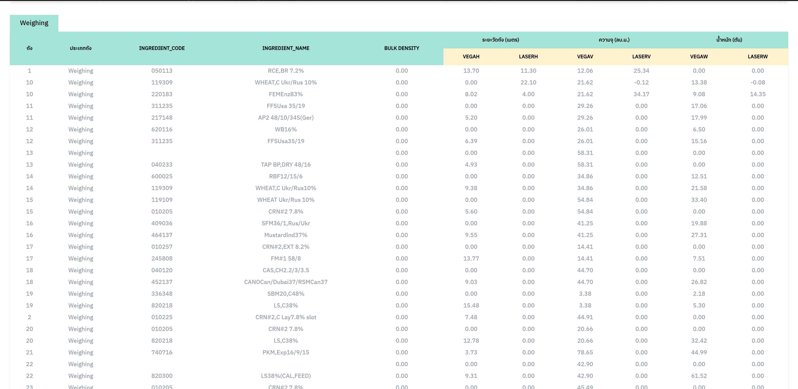
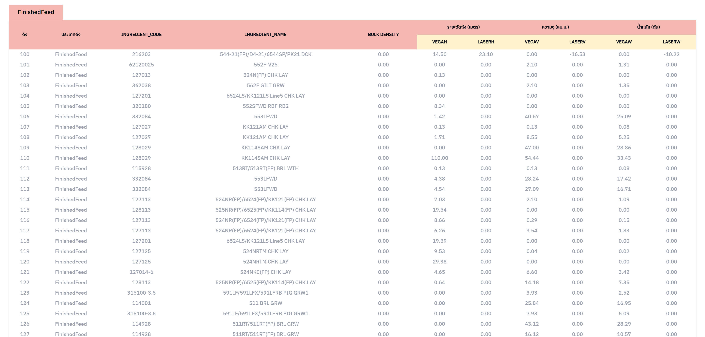
ระบบแยกชนิดของอาหารที่ผลิตในโรงงาน (โปรเจกต์จากฝึกงานที่ CPF)
พัฒนาเว็บสำหรับแสดงและจัดการข้อมูลชนิดอาหารที่ผลิตในแต่ละโรงงาน โดยแยกตามรหัสสูตรผลิต ชื่อแบรนด์
และช่วงเวลาในการผลิต
ระบบช่วยให้เจ้าหน้าที่สามารถตรวจสอบรายการอาหารย้อนหลัง
และดูสถานะการผลิตของโรงงานแต่ละแห่งได้อย่างสะดวก
ฟีเจอร์หลัก:
ตารางแสดงข้อมูลชนิดอาหาร พร้อมรหัสสูตรผลิต 2 ชุด
มี dropdown ให้เลือกสถานะหรือคำสั่งดำเนินการ
แสดงวันที่สร้างและอัปเดตข้อมูลแบบอัตโนมัติ
รองรับการค้นหาและกรองตามเงื่อนไข
ตัวอย่างหน้าจอ:
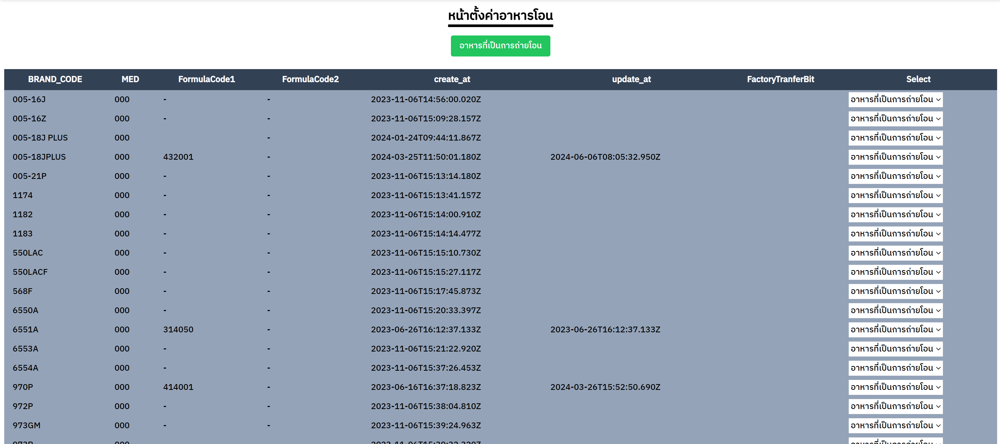
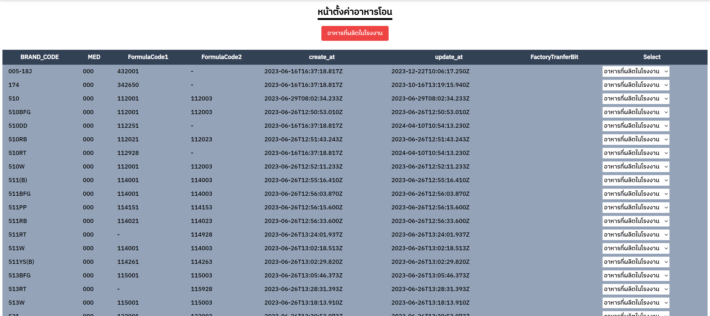
ระบบตั้งค่าและจัดการข้อมูลสต็อกสินค้า (โปรเจกต์จากฝึกงานที่ CPF)
พัฒนาเว็บสำหรับตั้งค่าระบบสต็อกสินค้าในสายการผลิตอาหาร เพื่อให้เจ้าหน้าที่สามารถกำหนดสูตรผลิต,
ประเภทอาหาร, รอบการผลิต และปริมาณความปลอดภัยในการเก็บสต็อก (Safety Stock) ได้อย่างเป็นระบบ
ฟีเจอร์หลัก:
ตารางแสดงข้อมูลชนิดอาหาร พร้อมรหัสสูตรผลิต 2 ชุด
มี dropdown ให้เลือกสถานะหรือคำสั่งดำเนินการ
แสดงวันที่สร้างและอัปเดตข้อมูลแบบอัตโนมัติ
รองรับการค้นหาและกรองตามเงื่อนไข
ตัวอย่างหน้าจอ:
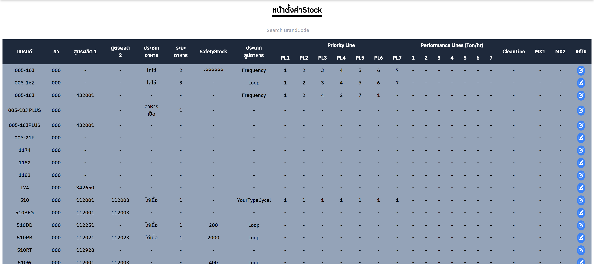
To-do List Manager (โปรเจกต์จากการเรียนรู้เพิ่มเติม - FutureSkill)
แอปจัดการรายการสิ่งที่ต้องทำ (To-do) ที่ช่วยให้ผู้ใช้สามารถสร้าง แก้ไข ลบ
และติดตามงานตามวันครบกำหนดได้
แอปใช้ React และจัดการสถานะด้วย useReducer เพื่อความยืดหยุ่นในการควบคุมรายการทั้งหมด
พร้อมกรองข้อมูลตามปีที่เลือกได้
ฟีเจอร์หลัก:
เพิ่มงานใหม่พร้อมวันครบกำหนด (Due Date)
แสดงรายการทั้งหมด พร้อมแสดงสถานะ “เสร็จแล้ว” / “ยังไม่เสร็จ”
แก้ไข/ลบงานได้แบบ inline
กรองงานตามปีที่เลือกจาก dropdown
จัดเก็บข้อมูลใน LocalStorage เพื่อไม่ให้หายเมื่อปิดเบราว์เซอร์
ใช้ Context API (HandlerContext) ในการแชร์ฟังก์ชันระหว่าง components
สิ่งที่ได้เรียนรู้:
การใช้ useReducer ในการจัดการ state ที่ซับซ้อน
การแยก Components ใน React ให้ทำงานร่วมกันอย่างมีประสิทธิภาพ
การใช้ LocalStorage และ Context API
การสร้าง UI/UX ที่ใช้งานง่ายในระดับพื้นฐาน
ตัวอย่างหน้าจอ:
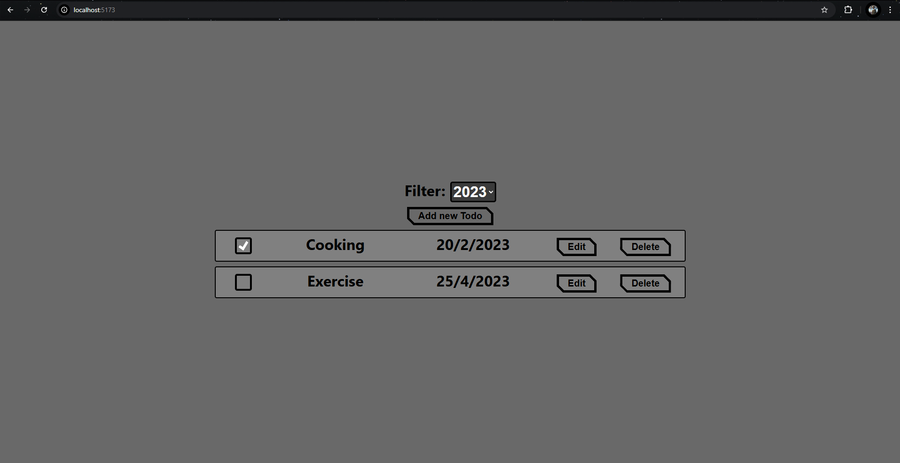
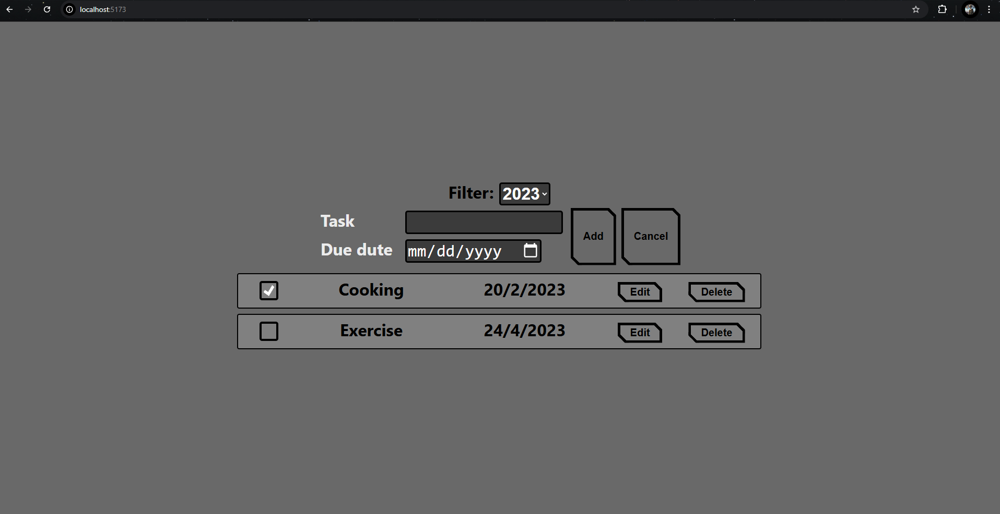
GitHub Link: Todo List
Income & Expense Tracker (โปรเจกต์จากการเรียนคอร์ส Fullstack กับ FutureSkill)
พัฒนาเว็บแอปพลิเคชันสำหรับบันทึกและจัดการรายรับรายจ่ายแบบง่าย โดยผู้ใช้สามารถเพิ่ม, แก้ไข,
ลบรายการได้
พร้อมฟังก์ชันกรองข้อมูลตามประเภท “Income” หรือ “Expense” เพื่อช่วยวิเคราะห์พฤติกรรมทางการเงิน
ฟีเจอร์หลัก:
เพิ่มข้อมูลรายการรายรับ/รายจ่าย พร้อมรายละเอียด: ประเภท, หมวดหมู่, ช่องทางชำระเงิน, จำนวนเงิน
แสดงรายการทั้งหมดพร้อมระบบ Filter เลือกประเภท (Income/Expense)
ใช้ useReducer จัดการ state ทั้งหมดของแอปแบบมีประสิทธิภาพ
เก็บข้อมูลใน localStorage เพื่อให้แอปจดจำข้อมูลเมื่อเปิดใหม่
มีระบบ context (HandlerCtx) เพื่อส่งฟังก์ชันระหว่าง components หลัก
สิ่งที่ได้เรียนรู้:
การเขียน React Component แบบแยกสัดส่วน (NewList, List, Filter)
การจัดการ state ซับซ้อนด้วย useReducer
การใช้ context API เพื่อแชร์ฟังก์ชันข้าม component
การออกแบบ UI ที่สื่อสารง่าย + ใช้งานจริง
ตัวอย่างหน้าจอ:
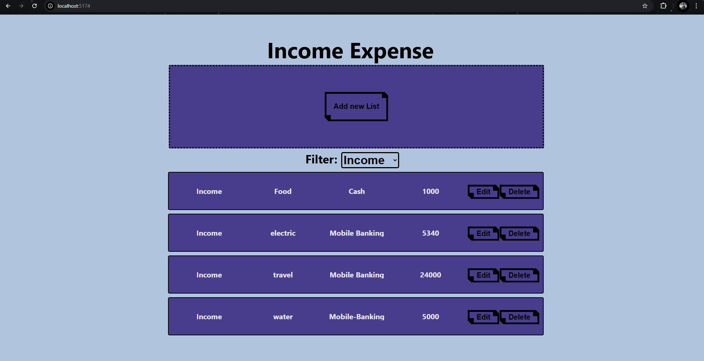
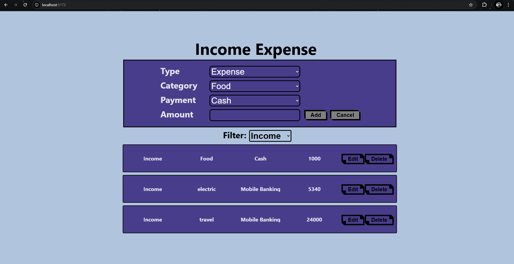
GitHub Link: Income & Expense Tracker
↑ กลับด้านบน